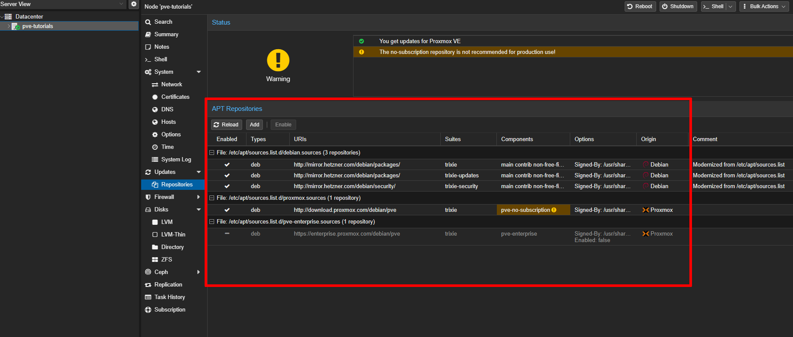

Bevor Sie mit dem Upgrade beginnen, müssen Sie verstehen, dass ein Cluster-Upgrade von Proxmox VE tief ins System eingreift. Sie wechseln auf eine neue Debian-Version (Bookworm → Trixie) und gleichzeitig auf Proxmox VE 9. Dabei werden viele Pakete aktualisiert, und es können Konfigurationsänderungen entstehen. Ein abgebrochenes oder fehlerhaftes Upgrade kann dazu führen, dass Ihr Node nicht mehr startet oder VMs/Container nicht mehr laufen. Deshalb sind Backups und eine saubere Vorbereitung entscheidend.
Ich schreibe es unten noch mal. Machen Sie das nicht, ohne vorher Ihre VMS, CTs, und Config-Dateien gesichert zu haben!
DIGITAL-easy Dienstleistungen zu Proxmox VE - PBS - Cluster - Ceph
Meine Proxmox-Serverdienstleistungen habe ich auf einer separaten Website veröffentlicht, da diese Seite hier in erster Linie als Tutorial- und Anleitungsplattform gedacht ist. Dort finden Sie alle Informationen zu meinen Angeboten rund um Proxmox VE, Clusterlösungen, Migrationen und Support. Bitte besuchen Sie: digital-easy.de/dienstleistungen.html
Inhalte des Artikels Proxmox VE8 zu VE9 Upgrade
Upgrade von Proxmox VE 8 auf 9 – was Sie vorher beachten müssen
Bevor Sie ein Upgrade von Proxmox VE 8 auf Version 9 durchführen, sollten Sie einige grundlegende Vorbereitungen treffen. Ein Upgrade ist zwar in der Regel recht zuverlässig, kann aber durch individuelle Anpassungen an Ihrem System ins Stocken geraten.
Als Erstes steht die Sicherung Ihrer virtuellen Maschinen an. Legen Sie vollständige Backups aller VMs und Container an, damit Sie im Notfall jederzeit auf einen funktionierenden Stand zurückkehren können. Prüfen Sie zusätzlich, ob Ihre Backup-Speicher noch ausreichend Platz bieten, und führen Sie einen kurzen Test-Restore durch, um die Verlässlichkeit Ihrer Sicherungen sicherzustellen.
Ebenso wichtig ist die Dokumentation. Wenn Sie über ein ISMS oder ein eigenes Dokumentationssystem verfügen, sollten Sie dort nachsehen, welche Änderungen Sie in der Vergangenheit an Ihrem Proxmox-System vorgenommen haben. Typische Beispiele sind Anpassungen an der Datei /etc/ssh/sshd_config, das Einbinden eigener SSH-Keys, die Einrichtung von fail2ban-Regeln oder zusätzliche Netzwerk- und Firewall-Konfigurationen. Jede dieser Modifikationen kann beim Upgrade überschrieben oder verändert werden. Sichern Sie daher alle Konfigurationsdateien – entweder durch das Kopieren auf ein separates Laufwerk oder indem Sie den Text exportieren und ablegen.
Bedenken Sie außerdem die Arbeitsumgebung während des Upgrades. Führen Sie den Prozess möglichst nicht in einer einfachen SSH-Sitzung über Kitty oder Putty aus. Die Verbindung kann jederzeit abbrechen, und das führt im schlimmsten Fall zu einem unvollständigen Upgrade. Besser ist es, tmux oder screen zu verwenden, damit Sie die Sitzung im Hintergrund laufen lassen und sich bei Bedarf erneut verbinden können.
Zu den weiteren Vorbereitungen gehört, dass Sie alle aktuell installierten Pakete auf den neuesten Stand bringen und prüfen, ob Drittanbieter-Repositorys oder spezielle Kernelmodule vorhanden sind. Diese sollten Sie ebenfalls notieren und auf Kompatibilität zu Proxmox VE 9 überprüfen.
Kurz gesagt: Ein erfolgreiches Upgrade hängt nicht nur vom Proxmox-Installer ab, sondern in hohem Maße von Ihrer Vorbereitung. Wer seine Backups und Konfigurationen sichert, die eigene Dokumentation prüft und eine stabile Arbeitsumgebung nutzt, geht mit einem deutlich geringeren Risiko in das Upgrade.
Kostenlose IT-Sicherheits-Bücher & Information via Newsletter
Bleiben Sie informiert, wann es meine Bücher kostenlos in einer Aktion gibt: Mit meinem Newsletter erfahren Sie viermal im Jahr von Aktionen auf Amazon und anderen Plattformen, bei denen meine IT-Sicherheits-Bücher gratis erhältlich sind. Sie verpassen keine Gelegenheit und erhalten zusätzlich hilfreiche Tipps zur IT-Sicherheit. Der Newsletter ist kostenlos und unverbindlich – einfach abonnieren und profitieren!
Die offizielle Dokumentation zum Upgrade finden Sie hier:
https://pve.proxmox.com/wiki/Upgrade_from_8_to_9
1. Sicherung erstellen
Vor jedem großen Upgrade muss ein vollständiges Backup aller VMs und Container vorhanden sein. Falls ein Node nicht mehr hochkommt oder eine VM beschädigt wird, können Sie diese so wiederherstellen. Erstellen Sie über Proxmox Backup Server, externes Storage oder andere Backup-Tools vollständige Kopien aller virtuellen Maschinen und Container.
Kommen Sie bitte nicht auf die Idee, das ganze ohne Backups zu machen!
2. Vorbereitung der Arbeitsumgebung
Während des Upgrades werden Dienste wie Netzwerk, SSH oder Web-GUI oft neu gestartet. Wenn Sie nur über eine instabile SSH-Verbindung arbeiten, kann das Upgrade mittendrin abbrechen. Das führt fast sicher zu einem defekten System. Arbeiten Sie direkt auf der Konsole des Servers. Wenn das nicht möglich ist, nutzen Sie tmux oder screen, um eine SSH-Sitzung abzusichern.
Ich habe das Upgrade bereits getestet und nur über Kitty bzw. Putty in der Konsole gearbeitet. Das Upgrade ist sauber durchgelaufen. Dennoch: Bedenken Sie, dass die SSH-Verbindung abreißen kann. Versuchen Sie also, wenn möglich, mit tmux oder screen zu arbeiten.
3. Prüfen mit dem Tool pve8to9
Dieses Tool überprüft den Node und weist auf mögliche Probleme hin, z. B. inkompatible Konfigurationen, veraltete Pakete oder bekannte Stolperfallen. Es nimmt keine Änderungen vor, sondern liefert nur Hinweise.
Beheben Sie die vom folgenden Befehl gemeldeten Probleme und starten Sie das Tool so lange neu, bis keine Warnungen mehr erscheinen.
Geben Sie also in die Shell folgendes ein:
Kostenlose IT-Sicherheits-Bücher & Information via Newsletter
Bleiben Sie informiert, wann es meine Bücher kostenlos in einer Aktion gibt: Mit meinem Newsletter erfahren Sie viermal im Jahr von Aktionen auf Amazon und anderen Plattformen, bei denen meine IT-Sicherheits-Bücher gratis erhältlich sind. Sie verpassen keine Gelegenheit und erhalten zusätzlich hilfreiche Tipps zur IT-Sicherheit. Der Newsletter ist kostenlos und unverbindlich – einfach abonnieren und profitieren!
4. Migration laufender VMs und CTs
Während des Upgrades steht der Node nicht zur Verfügung. Wenn bestimmte VMs oder Container weiterlaufen müssen, verschieben Sie diese auf andere Nodes. Nutzen Sie die GUI oder CLI zur Migration. Beachten Sie, dass Migration von älteren auf neuere Versionen immer funktioniert, aber umgekehrt nicht garantiert ist.
5. Proxmox VE 8.4 auf den neuesten Stand bringen
Ein Upgrade funktioniert nur sauber, wenn alle Pakete auf dem letzten Stand sind. Alte Versionen können das Upgrade blockieren. Das Kommando pveversion muss mindestens 8.4.1 anzeigen. Gehen Sie wie folgt vor:
6. Ceph-Version prüfen (falls Sie Ceph einsetzen)
Wenn Sie ein Proxmox-System mit dem verteilten Speiche Ceph verwednen, ist nur Ceph Squid (Version 19) kompatibel mit Proxmox VE 9. Ältere Versionen müssen vorher aktualisiert werden. Wenn nicht Squid (19.x) angezeigt wird, führen Sie zuerst ein Ceph-Upgrade durch. Geben Sie also erst mal ein:
7. Debian-Repositories anpassen
Proxmox basiert auf Debian. Damit Ihr System die neuen Pakete für Debian Trixie lädt, müssen Sie die Paketquellen umstellen. Debian Trixie ist die derzeit neueste stabile Debian-Version und tritt die Nachfolge von Debian Bookworm an. Mit Trixie bringt Debian wieder zahlreiche Aktualisierungen bei Kernel, Paketen und Sicherheitsfunktionen mit. Proxmox VE 9 setzt genau auf diese Version auf und benötigt zwingend Debian Trixie als Basis. Eine Installation auf älteren Debian-Versionen wie Bookworm wird nicht unterstützt, da die neuen Funktionen und Abhängigkeiten von PVE 9 direkt auf die aktuelle Debian-Generation abgestimmt sind.
Kontrollieren Sie anschließend beide Dateien und kommentieren Sie alte Bookworm-Einträge mit # aus. Wir schauen dennoch noch einmal nach Bookworm Einträgen.
Geben Sie folgendes ein:
8. Proxmox VE 9 Repository einrichten
Ohne korrektes Repository erhalten Sie keine neuen Pakete. Enterprise-Kunden verwenden das Enterprise-Repository, alle anderen das No-Subscription-Repository.
Geben Sie den Befehl ein, oder kopieren Sie den Befehl genau so, wie er hier angezeigt wird:
Überprüfen Sie die Quellen anschließend:
9. Ceph Repository anpassen (nur Ceph-Nutzer)
Ab Proxmox VE 9 werden die Ceph-Repositories nicht mehr wie bisher direkt von den Ceph-Entwicklern gepflegt und eingebunden, sondern ausschließlich von proxmox.com bereitgestellt. Das hat einen klaren Hintergrund: Ceph entwickelt sich sehr schnell weiter, neue Versionen erscheinen in kurzen Abständen und enthalten oft tiefgreifende Änderungen, die nicht immer sofort zu einer Proxmox-Umgebung passen. Würden Sie die Pakete direkt von den Ceph-Repositories nutzen, könnten dadurch Inkompatibilitäten oder instabile Systeme entstehen.
Indem Proxmox die Ceph-Repositories selbst bereitstellt, erhalten Sie genau die Pakete, die für Ihre Proxmox-Version vorgesehen und getestet sind. Nur so ist sichergestellt, dass Ceph und Proxmox reibungslos zusammenarbeiten und Sie Updates gefahrlos einspielen können. Sie bekommen also nicht irgendeine Ceph-Version, sondern eine abgestimmte, geprüfte Variante, die langfristig unterstützt wird. Das erhöht die Stabilität und vereinfacht die Wartung, weil Sie sich auf die Kompatibilität verlassen können, ohne manuell Abhängigkeiten prüfen oder Pakete blockieren zu müssen.
Ab Proxmox VE 9 führt kein Weg mehr an den von Proxmox bereitgestellten Ceph-Repos vorbei, wenn Sie ein funktionierendes und stabiles Cluster betreiben wollen.
10. Löschen Sie die alten 8.x Repository-Dateien.
Löschen Sie veraltete PVE8 (Bookworm) Paketlistendateien. Sie können sehen, welche Dateien eingebunden sind, wenn Sie auf Datacenter → Node/Knoten → Updates → Repositorys klicken. Dort ist auch der Pfad zu den entsprechenden Dateien hinterlegt und sichtbar.

11. Paketindex aktualisieren
Damit apt alle neuen Quellen berücksichtigt:
12. System-Upgrade starten
Jetzt werden alle Pakete auf Debian Trixie und Proxmox VE 9 umgestellt. Das ist der zentrale Schritt. Dieser Schritt kann je nach Server-Hardware Minuten bis über eine Stunde dauern. Währenddessen werden Sie nach Konfigurationsdateien gefragt.
Empfohlene Antworten:
/etc/issue → Nein
/etc/lvm/lvm.conf → Ja
/etc/ssh/sshd_config → Ja, wenn Sie keine eigenen Änderungen gemacht haben
/etc/default/grub → Nein, falls unsicher
/etc/chrony/chrony.conf → Ja, wenn Sie keine Änderungen gemacht haben
Geben Sie also nun ein:
13. Kontrolle
Nach dem Upgrade muss der neue Kernel geladen werden. Erst dann läuft Ihr Node vollständig mit Proxmox VE 9.
pve8to9 --full
14: Zur Sicherheit
update-grub
15. Neustart
reboot

Informationen, Tipps und Tricks für Proxmox-Einsteiger und Fortgeschrittene - umfassend überarbeitete Ausgabe 4 mit 450 Seiten Proxmox-Wissen
Buch auf AmazonNEU
Upgrade von Proxmox VE 8 auf 9 – was nach dem Upgrade zu tun ist
Nachdem das Upgrade auf Proxmox VE 9 abgeschlossen ist, sollten Sie nicht einfach davon ausgehen, dass alles automatisch so läuft wie zuvor. Ein sauber durchgelaufener Upgrade-Prozess ist zwar ein gutes Zeichen, dennoch sind einige Nacharbeiten unverzichtbar.
Beginnen Sie mit einem gründlichen Systemcheck. Melden Sie sich in der Weboberfläche an und prüfen Sie, ob alle virtuellen Maschinen und Container wie gewohnt starten und erreichbar sind. Testen Sie die wichtigsten Dienste, die auf Ihren VMs laufen, beispielsweise Datenbanken, Mailserver oder Webanwendungen. Achten Sie dabei auch auf die Performance – manchmal laufen Systeme zwar, zeigen aber subtile Fehler oder Verzögerungen.
Sehen Sie sich anschließend Ihre Konfigurationsdateien an. Beim Upgrade können eigene Anpassungen überschrieben oder in separate Dateien verschoben worden sein. Besonders wichtig sind die /etc/ssh/sshd_config, fail2ban-Konfigurationen, Netzwerkeinstellungen in /etc/network/interfaces sowie Firewall- und Cluster-Konfigurationen. Vergleichen Sie diese mit Ihren gesicherten Versionen und stellen Sie sicher, dass alle individuellen Änderungen wieder aktiv sind.
Ein Blick in die Logs lohnt sich ebenfalls. Sowohl mit journalctl als auch über syslog sollten Sie prüfen, ob Warnungen oder Fehler auftreten. Häufig fallen hier Probleme mit Treibern, Storage oder Netzwerk auf, die beim ersten Blick über die Weboberfläche nicht sichtbar sind.
Danach ist das Monitoring dran. Falls Sie externe Überwachungstools nutzen, wie etwa Checkmk, Zabbix oder Prometheus, sollten Sie kontrollieren, ob die Verbindungen und Agenten nach dem Upgrade noch aktiv sind. Auch die Proxmox-internen Cluster-Informationen sollten überprüft werden, wenn Sie mehrere Nodes betreiben.
Zum Abschluss empfiehlt es sich, einen kurzen Sicherheitstest durchzuführen. Prüfen Sie, ob Ihre SSH-Keys noch wie gewünscht funktionieren, ob fail2ban weiterhin aktiv ist und ob die Firewall-Regeln korrekt greifen. Falls Sie Dienste nach außen freigegeben haben, sollten Sie mit einem Portscan oder externen Test sicherstellen, dass nichts Unerwünschtes offen ist.
Wenn alle Tests erfolgreich sind, können Sie die gesicherten Backups an einen sicheren Ort verschieben und Ihr System wieder in den Normalbetrieb überführen. Dokumentieren Sie die durchgeführten Schritte im ISMS oder in Ihrer eigenen Dokumentation, damit Sie beim nächsten Upgrade sofort auf Erfahrungen zurückgreifen können.
So stellen Sie sicher, dass Ihr Proxmox VE 9 stabil läuft und Sie nicht erst Wochen später auf Probleme stoßen, die sich gleich nach dem Upgrade hätten erkennen lassen.
Ich habe ein YouTube‑Video zum Upgrade von Proxmox PVE 8 auf PVE 9 erstellt. In diesem Video gehe ich alle wichtigen Punkte durch und zeige Ihnen, wie Sie Ihr System optimal auf die neue Version vorbereiten können. Bevor das Upgrade endgültig durchgeführt wird, kümmern wir uns selbstverständlich um die Sicherung der Konfigurationen sowie um Backups der virtuellen Maschinen, um mögliche Fehler abzufedern, sollten welche auftreten.
Über den Autor: Ralf-Peter Kleinert - ComputerRalle
Über 30 Jahre Erfahrung in der IT legen meinen Fokus auf die Computer- und IT-Sicherheit. Auf meiner Website biete ich detaillierte Informationen zu aktuellen IT-Themen. Mein Ziel ist es, komplexe Konzepte verständlich zu vermitteln und meine Leserinnen und Leser für die Herausforderungen und Lösungen in der IT-Sicherheit zu sensibilisieren.
Aktualisiert: Ralf-Peter Kleinert 27.08.2025